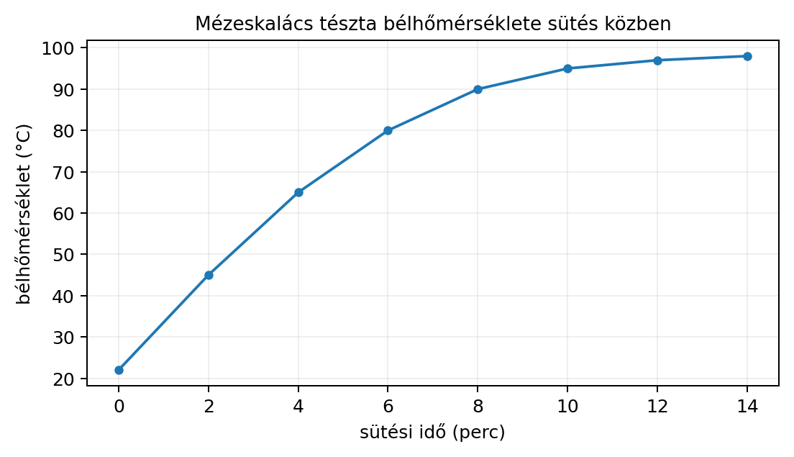

A mézes tészta sütésekor a legjellemzőbb üzemi hiba az, hogy a sütőből kivett mézeskalács gyönyörű barna, azonban a belseje még nyers vagy ragacsos marad. A mézes, cukros tészta felülete ugyanis gyorsan barnul, miközben a tészta belseje lassabban melegszik fel. Ha a pék nem a tészta összetételéhez, vastagságához és alakjához illeszti a sütési hőmérsékletet, időt és a sütőtér páraviszonyait, akkor a termék túlbarnult, kiszáradt vagy nyers, ragacsos, törékeny lesz. Ezért ebben az alfejezetben a mézes tészta sütésének paramétereit, a sütőtér páratartalmának szerepét és a lemezek, formák előkészítését tanuljuk meg.
Egy mézeskalács báb vastagabb törzsét és vékonyabb karját ugyanabban a sütőtérben sütjük. A vékony rész előbb barnul és szárad, a vastag rész tovább őrzi a nedvességet. A sütés során a sütőtéri hőmérséklet nagyjából állandó, míg a tészta bélhőmérséklete lassan emelkedik. Az alábbi görbe szemléltető tanulási példa, nem mért adat: egy kb. 10 mm vastag, 45 g-os mézeskalács lap bélhőmérséklete a sütés során.

A görbe jól mutatja, hogy a tészta belseje csak fokozatosan melegszik, ezért a rövid, forró sütés nem mindig ad kellően átsült, szárított terméket.
Definíció. A mézes tészta sütése olyan hőkezelési folyamat, amelyben a megformázott, kémiailag lazított, magas cukor- és méztartalmú tésztadarabot hő hatására megemeljük, megszárítjuk, héját kialakítjuk, és a felületén a kívánt barnulást elérjük, miközben a tészta belseje is megfelelően átsül.
A mézes tészta a kenyér- és péksütemény-tésztáktól eltérően általában kevesebb vizet tartalmaz, nem élesztővel, hanem kémiai lazítószerekkel lazított, és nagy mennyiségű cukrot, mézet, fűszert, gyakran zsiradékot tartalmaz. A sütés során a hő hatására:
Előírás. Az (EU) 2017/2158 rendelet a finom pékáruk között a mézeskalácsot is említi: az élelmiszer-vállalkozónak mérlegelnie kell az ammónium-hidrogén-karbonát (szalalkáli) részleges vagy teljes kiváltását, a sütési hőmérséklet–idő és a végső szín szabályozását, és az akrilamidtartalmat a rendeletben szereplő referenciaszinthez kell viszonyítania (ellenőrizendő: a melléklet pontos szövege és a mézeskalácsra vonatkozó referenciaszint).
Figyelem. A magas cukor- és méztartalom miatt a mézes tészta barnulási hajlama nagy, az akrilamid-képződés kockázata is felmerül, ezért a sütési hőmérséklet-idő kombinációt úgy kell megválasztani, hogy a felület aranybarnára süljön, de ne égjen meg. Az (EU) 2017/2158 rendelet szerinti akrilamid-csökkentési kötelezettségek termékkategóriánként érvényesek; a mézeskalácsra vonatkozó kategória és szint ellenőrizendő az aktuális előírásban.
A mézes tészta sütési paramétereit a következők határozzák meg:
A sütés fázisait a következőképpen jellemezhetjük:
Higiénia. A sütés során csak tiszta, élelmiszerrel érintkezésre alkalmas lemezeket, formákat és eszközöket használjunk. A termék alá tett sütőpapírnak élelmiszerrel érintkezésre alkalmasnak kell lennie, és nem éghet meg a sütési hőmérsékleten (1935/2004/EK rendelet keretében ellenőrizendő).
HACCP. A sütési hőmérséklet és idő átsültséget biztosító betartása a mézes tésztánál is kritikus pont lehet. Ha a tésztát nyers állapotban, szobahőmérsékleten hosszabb ideig tároljuk, a mikrobiológiai kockázat nő; a sütésnek a kórokozókat el kell pusztítania. A dokumentációban rögzíteni kell a sütési hőmérsékletet, az időt, a tétel azonosítóját és a minőségi ellenőrzés eredményét. A pontos határértékek a pékség HACCP-tervéből származnak (ellenőrizendő).
A mézes tészta sütési beállításait mindig a konkrét tészta jellemzőihez kell igazítani.
Összetétel hatása. Minél nagyobb a tészta cukor-, méz- és zsiradéktartalma, annál gyorsabban barnul a felület, és annál alacsonyabb sütőtéri hőmérsékletet kell választani. A magas méztartalom emellett nedvességet köt meg, ezért az ilyen tészta hajlamosabb maradni puha, ragacsos bélre. Ilyenkor kissé hosszabb, alacsonyabb hőmérsékletű sütés ajánlott. A kémiai lazítószer mennyisége befolyásolja a tészta térfogatát: túl sok szalalkáli vagy szódabikarbóna nagy, szivacsos, de törékeny szerkezetet ad, és szúrós, szappanos mellékízt okozhat; túl kevés pedig lapos, kemény terméket eredményez. A lazítószerek bomlása hőmérsékletfüggő, ezért a sütési hőmérséklet időzítése a lazulást is meghatározza.
Tömeg és vastagság hatása. A nagyobb tömegű, vastagabb tésztadarab belseje lassabban melegszik fel, ezért alacsonyabb sütőtéri hőmérsékletre és hosszabb időre van szükség, mint a vékonyabb daraboknál. A bélátsültséget többféleképpen ellenőrizhetjük:
Alak hatása. A kiálló, vékony részek (kar, láb, díszítőelem) hamarabb barnulnak és száradnak, mint a vastagabb törzs. Az egyenletes sütéshez lehetőség szerint egyenletes vastagságú darabokat alakítsunk ki. Ha a termék alakja elkerülhetetlenül változó vastagságú, akkor:
Példa. Két különböző terméket sütünk ugyanabban a sütőben: 5 mm vastag mézeskalács-korongot és 15 mm vastag mézes házikó-falat. A korongnál 180–190 °C és 8–10 perc, a falnál 160–170 °C és 18–22 perc jellemző (tanulási példa). Ha a falat 190 °C-on sütjük, a felülete megég, a közepe nyers marad.
A mézes tészta sütésekor a sütőtér páratartalmát általában alacsonyan kell tartani. A magas cukor- és méztartalmú felület a sütés elején kevésbé igényel gőzölést; a cél a száraz, ropogós héj. Ha a sütőtérben sok tészta sül, a tésztából felszabaduló vízgőz feldúsulhat. Ilyenkor a sütő páraelszívóját működtetni kell, vagy időnként rövid ideig a sütőajtót résnyire nyitva kell szellőztetni. A túl magas páratartalom miatt a termék felülete ragacsos, fényes, a héj nem keményedik meg, a tárolhatóság romlik.
Figyelem. A gőzöléses kemencékben véletlenül se kapcsoljuk be a gőzt mézes tészta sütésekor, mert az a felületet átnedvesíti és a barnulást gátolja. Ha a kemence korábban gőzölt, a sütőteret előbb szárítsuk fel, és csak utána tegyük be a mézes tésztát.
Előírás. A sütőtér páraviszonyainak beállítása a kemence gyártói utasítása és az üzemi technológiai lap szerint történjen; a páratartalom-mérő berendezés hitelességét rendszeresen ellenőrizni kell (ellenőrizendő: gyártói adatlap, mérésügyi előírás).
A mézes tészta sütésére többféle berendezés alkalmas:
A választott kemencét minden használat előtt ellenőrizni kell: a hőmérséklet-szabályozó működik, a vészleállító elérhető, a sütőtér tiszta, idegen anyagtól mentes.
Gépbiztonság. A forró kemence, sütőlemez és sütőforma súlyos égési sérülést okozhat. Forró sütőtérbe kézzel nem nyúlunk: a lemezeket hosszú nyelű lapáttal vagy kihúzóval, hőálló kesztyűben mozgatjuk. Tisztítás, beavatkozás, idegen tárgy eltávolítása csak leállított, lehűlt, áramtalanított (gázkemencénél elzárt) és újraindítás ellen biztosított kemencén történhet. A sütő ajtaját óvatosan, a gőzfelhő irányát kerülve kell nyitni. A kemence elektromos csatlakozóját terheletlenül, a gyártó utasítása szerint szabad kezelni; javítani csak szakszerviz jogosult. A sérült hőmérséklet-érzékelőt, tömítést vagy védőburkolatot jelenteni kell, és a sütőt addig nem szabad használni.
Lemezek és formák előkészítése. A mézes tészta magas cukor- és méztartalma miatt a tészta hajlamos a sütőlemezre tapadni. A tapadás megelőzésére a következő módszerek használhatók:
A formákat (például mézes házikó falához való kereteket, kiszúró formákat) csak tisztán, szárazon, élelmiszersavnak ellenálló anyagból szabad használni. A fa formákat ne áztassuk hosszan, fertőtlenítésüknél a gyártó utasítását kövessük.
Cél: egy adott tétel mézeskalács tésztát a technológiai lap szerinti hőmérsékleten és időn átsütni, a termékeket sérülés nélkül kisütni és a folyamatot dokumentálni.
Eszközök és anyagok: kemence, sütőlemez, sütőpapír vagy zsiradék és liszt, hőmérő, stopperóra, hőálló kesztyű, hosszú nyelű sütőlapát, tiszta munkaasztal, sütési napló.
Higiénia.
Gépbiztonság.
Lépések:
Tipikus hibák:
Termék: Mézeskalács báb (díszítetlen, hagyományos
fűszerezett tészta)
Termékcsoport: Mézeskalács-félék
Késztömeg: 45 g/darab
Feladási tömeg: 49 g/darab (8% sütési-hűlési veszteség,
tanulási példa: 45/(1 − 0,08) = 48,9 g)
Darabszám a tételben: 190 db (190 · 0,049 = 9,31 kg; a
maradék kb. 0,14 kg a kiszúrás széltészta-vesztesége)
Receptúra-táblázat
| Nyersanyag | Lisztre vetített % | Mennyiség (kg) | Megjegyzés |
|---|---|---|---|
| Búzaliszt (BL 55) | 100,0 | 5,000 | 20–22 °C-on bemérve |
| Méz | 40,0 | 2,000 | langyosan, folyósítva |
| Kristálycukor | 20,0 | 1,000 | finomszemcsés |
| Vaj (vagy étkezési zsiradék) | 12,0 | 0,600 | olvasztva, 30–35 °C-ra hűtve |
| Tojás | 8,0 | 0,400 | egész tojás, átszűrve |
| Szalalkáli (ammónium-bikarbonát) | 0,8 | 0,040 | kis vízben oldva (tanulási példa, ellenőrizendő: gyártmánylap) |
| Szódabikarbóna | 0,5 | 0,025 | átszitálva |
| Fűszerkeverék (fahéj, szegfűszeg, gyömbér, szerecsendió) | 1,0 | 0,050 | őrölt, átszitálva |
| Víz | 6,7 | 0,335 | a tészta állagához igazítva |
| Tészta tömege | – | 9,450 | a megadott mennyiségek összege |
A tésztahozam 100 kg lisztre vetítve kb. 189 kg tészta, de a mézes tészta kemény, alacsony víztartalmú. A feladási tömeg és a sütési veszteség termékenként eltér; a 45 g-os késztermékhez 8% veszteségnél kb. 49 g-os feladási tömeg tartozik (tanulási példa, ellenőrizendő).
Műveleti paraméterek:
Allergén.
HACCP- és minőségi pontok:
A számok tanulási példák; az üzemi technológiai lap, a kemence gyártói adatlapja és a HACCP-terv ettől eltérhet (ellenőrizendő).
A mézes tészta sütés utáni minőségét elsősorban érzékszervi és egyszerű fizikai mérésekkel ellenőrizzük.
Megfelelő termék jellemzői:
Mérhető jellemzők: a késztermék tömege (sütési veszteséggel csökkentve), a maghőmérséklet, a nedvességtartalom (mézeskalácsnál jellemzően 8–12%, tanulási példa, ellenőrizendő: Magyar Élelmiszerkönyv vonatkozó előírása).
Tünet: A mézeskalács felülete sötétbarna, szinte
égett, a belseje nyers és ragacsos.
Ok: Túl magas sütőtéri hőmérséklet, rövid idő. A magas
cukor- és méztartalom gyors barnulást ad.
Megelőzés/javítás: Csökkentsük a hőmérsékletet (például
180 °C-ról 160 °C-ra), hosszabbítsuk az időt. A sütési próbával
állapítsuk meg a helyes kombinációt. Ha a tétel már megsült, de nyers a
belseje, a sütőben utósütés csak akkor javít, ha a hőmérsékletet
alacsonyabban tartva a bél is átsül.
Tünet: A mézeskalács ragad a lemezhez,
kiszedéskor a formából kitörik.
Ok: Elmaradt vagy rosszul elvégzett
lemez-előkészítés.
Megelőzés/javítás: Használjunk sütőpapírt vagy
megfelelő zsírozás-lisztezést. A sérült bevonatú lemezeket cseréljük. A
forró terméket ne próbáljuk erővel lefeszíteni, mert törik; rövid ideig
hűlni hagyjuk, majd óvatosan emeljük le.
Tünet: A mézeskalács felülete repedezett, a
darabok térfogata egyenetlen.
Ok: Túl erős légáramlás a konvekciós sütőben, vagy
hirtelen hőmérséklet-emelkedés; a tészta felülete hamarabb megszilárdul,
mint ahogy a gázok távoznának.
Megelőzés/javítás: Mérsékeljük a ventilátor fokozatot,
vagy használjunk hagyományos sütőteret. A tésztát ne tegyük túl hidegen
a forró sütőbe; hagyjuk szobahőmérsékletre melegedni.
Tünet: A mézeskalács a sütőből kivéve puha, majd
kihűlve sem keményedik meg.
Ok: Alacsony sütési hőmérséklet vagy rövid idő, magas
páratartalom a sütőtérben.
Megelőzés/javítás: Ellenőrizzük a sütő hőmérsékletét és
a páraelszívót. A tésztát tovább sütjük alacsonyabb hőmérsékleten, hogy
a bél átszáradjon. A kihűlt terméket ne csomagoljuk addig, amíg
nedvességtartalma magas.
A válaszok a Megoldások elején találhatók.
1. feladat (A)
Sorolja fel a mézes tészta sütésének fő fázisait a betöltéstől a
kisütésig, és mindegyik fázisnál egy-egy jellemzőt.
2. feladat (A)
Miben tér el a mézes tészta sütése az élesztős kenyér sütésétől a
sütőtéri páratartalom szempontjából? Indokolja röviden.
3. feladat (B)
Egy mézeskalács-üzem 5 kg lisztből készít mézes tésztát a technológiai
lap szerint. A tészta össztömege 9,45 kg. A feladási tömeg darabonként
0,052 kg, a sütési veszteség 8%. Hány darab terméket tudnak kiszabni a
tésztából, és mennyi lesz a késztermék tömege darabonként? A számítást
mértékegységekkel végezze.
4. feladat (B)
A sütő hőmérséklet-szabályozója 180 °C-ot mutat, de a termékek felülete
a szokottnál hamarabb barnul. Soroljon fel legalább két lehetséges okot,
és mindegyikhez adjon javaslatot a kivizsgálásra.
5. feladat (C)
Egy vastag falú mézes házikó falat 180 °C-on 10 percig sütünk, a
felülete szép aranybarna, de a maghőmérséklet csak 70 °C. Értékelje a
helyzetet: mi a termékbiztonsági és minőségi kockázat? Mit tenne a
helyesbítés érdekében? Hogyan módosítaná a következő tétel sütési
paramétereit?
6. feladat (D)
Készítsen rövid sütési naplóbejegyzést egy mézeskalács báb tételhez a
következő adatokkal: sütőtéri hőmérséklet 180 °C, sütési idő 11 perc,
maghőmérséklet 93 °C, a tétel azonosítója MK-2025-041, a lemez
sütőpapírral bélelt, nincs rendellenesség. A bejegyzés tartalmazza a
HACCP szempontból fontos információkat.
Önellenőrzés – válaszok
1. feladat (A) megoldás
A sütési fázisok: (1) felmelegedés és lazítás – a kémiai lazítószerek
gázt fejlesztenek, a tészta emelkedik; (2) szerkezeti megszilárdulás – a
keményítő csirizesedik, a fehérjék koagulálnak; (3) szárítás és
héjképződés – a víz elpárolog, a héj szárad; (4) barnulás –
Maillard-reakció és karamellizáció.
2. feladat (A) megoldás
A kenyér sütésekor a sütőtér elején gőzölést alkalmazunk a héj
késleltetésére és a térfogat növelésére. A mézes tészta sütésekor
viszont alacsony páratartalmat tartunk, mert a magas cukor- és
méztartalom miatt a felület így is gyorsan barnul, és a cél a száraz,
ropogós, tartós szerkezet. A gőz a mézeskalácsnál ragacsos, puha
felületet okozna.
3. feladat (B) megoldás
Adott: tészta össztömege 9,45 kg; feladási tömeg darabonként 0,052 kg;
sütési veszteség 8%.
Keresett: darabszám és késztermék tömege darabonként.
A darabszám:
A sütési veszteséggel számolt készterméktömeg:
Ellenőrzés: a 181 db feladási tömeg összege 181·0,052 = 9,412 kg, ami a
9,45 kg-os tésztából kis megmunkálási veszteséggel reális; a
készterméktömeg a veszteség miatt kisebb. A 47,8 g kissé meghaladja a
technológiai lap 45 g-os célját; a feladási tömeg 49 g-ra csökkenthető
(45/0,92 ≈ 48,9 g); 9,45 kg-ból elméletileg 192 db jönne ki, a kiszúrás
széltészta-veszteségével (kb. 0,14 kg) 190 db – ahogy a technológiai lap
is számol.
4. feladat (B) megoldás
Lehetséges okok: (1) a sütő tényleges hőmérséklete magasabb, mint a
beállított érték, mert a hőmérséklet-érzékelő hibás vagy a szabályozó
kalibrálatlan; javaslat: hiteles hőmérővel ellenőrizzük a sütőtér
hőmérsékletét, és kalibráltassuk a sütőt. (2) A tészta összetétele
eltér, például magasabb a méz- vagy cukortartalom; javaslat:
ellenőrizzük a receptúrát és a bemérést. (3) A légkeverés erősebb a
megszokottnál, ami gyorsabb hőátadást okoz; javaslat: mérsékeljük a
ventilátort, vagy helyezzük a tésztát alacsonyabb polcra.
5. feladat (C) megoldás
A maghőmérséklet 70 °C, ami nem éri el a biztonságos átsültséghez
ajánlott 90–95 °C-ot. Ez azt jelenti, hogy a tészta belseje nem érte el
a mikrobiológiai szempontból biztonságos hőmérsékletet, és a bél nyers,
ragacsos maradhat. A termék nem felel meg, ezért a tételt vissza kell
tartani. Helyesbítés: a sütő hőmérsékletét csökkentve (például 160
°C-ra) a sütési időt hosszabbítsuk meg úgy, hogy a maghőmérséklet elérje
a 90–95 °C-ot. A következő tételnél a hőmérsékletet alacsonyabbra
állítjuk, és a becsült időt megnöveljük; a sütési naplóban rögzítjük a
változtatást.
6. feladat (D) megoldás
Sütési naplóbejegyzés:
A bejegyzésnek tartalmaznia kell a mérés időpontját, a hőmérő azonosítóját (ha van), és aláírást.
A mézes tészta sütése a magas cukor- és méztartalom miatt különleges hőkezelési eljárás. A sütőtéri hőmérséklet jellemzően 160–200 °C, a pontos értéket a tészta összetétele, vastagsága és alakja határozza meg. A vastagabb, nagyobb darabokat alacsonyabb hőmérsékleten, hosszabb ideig kell sütni, mint a vékony figurákat. A sütőtér páratartalmát alacsonyan kell tartani, gőzölés nem alkalmazható, mert a cél a száraz, ropogós héj. A sütési folyamat fázisai: felmelegedés-lazítás, szerkezeti megszilárdulás, szárítás-héjképződés, barnulás. A lemezeket sütőpapírral vagy zsírozás-lisztezéssel kell előkészíteni a tapadás ellen. A sütés kritikus pont: az átsültséget maghőmérséklet-méréssel vagy törési próbával kell igazolni, és a folyamatot dokumentálni. Továbbvitt eredmény. A sütési paraméterek, az átsültség ellenőrzése és a lemez-előkészítés ismerete nélkülözhetetlen a Mézeskalács-díszítés és mézeskalács-minták alfejezethez, ahol a megsült, stabil felületű mézeskalácsot díszítőműveletekkel látjuk el.